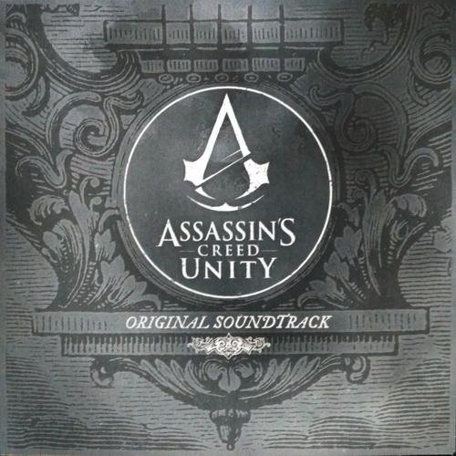
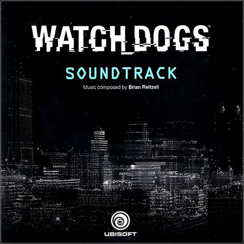

Everything we see exist together in a delicate balance.
These games depicts racial conflict, including name-calling and factors that influence emotions.
These games attempts to convey the experience of being a black man. Offers their own perspective and how they live their everyday lives in the real world.
Gaining some knowledge about the history of some places in the world (e.g., Egypt, San Francisco, New Orleans)
The games in this website also experience racial bias in photography. The current technological struggle with black faces.
Primary goal with the narrative way was to reflect and uncover the truth behind the various stories while keeping things light and fun, even when tackling serious subjects.


Autoplayed video, only works when muted (you can unmute). An example of Mafia III theme.